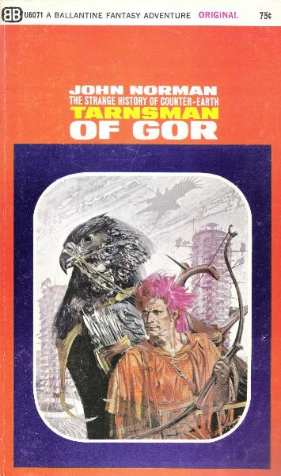
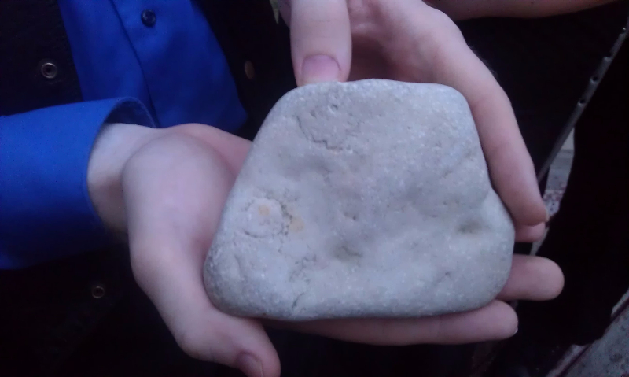

The end of the institution of marriage is a necessary condition for the liberation of women.
"The Declaration of Feminism," November 1971
Since marriage constitutes slavery for women, it is clear that the women's movement must concentrate on attacking this institution. Freedom for women cannot be won without the abolition of marriage.
radical feminist leader Sheila Cronan
The institution of sexual intercourse is anti-feminist
Ti-Grace Atkinson "Amazon Odyssey" (p. 86), 1974
Being a housewife is an illegitimate profession... The choice to serve and be protected and plan towards being a family-maker is a choice that shouldn't be. The heart of radical feminism is to change that.
Vivian Gornick, feminist author, University of Illinois, "The Daily Illini," April 25, 1981
Welcome to Radical Feminism™
John F. Lange, Jr.
aka John Norman
Born Chicago, 1931
Philosophy Prof, Queens College, CUNY
Naturalist philosophy
Inspired by Nietzsche
Tarnsman of Gor
First published 1966
25 books by 1988, now 33
12 million copies sold
Argument by hyperbole

Gor
Sword-and-sandal Sci-Fi romance
Counter-Earth
Human transplants
Technology supressed
Many caricature cultures
Tarl Cabot
Goals of Gor
Espouse a sociological belief
Create a world in which to play
Sell lots of copies, make lots of money
Gorean Philosophy
(Crell edition)
Honor
"Flee," she said.
"I am of the Warriors," I said.
"But you may die," she said.
"That is acknowledged in the codes," I said.
...
"None would know if you betrayed the codes," she said.
"I would know," I said, "and I am of the Warriors."
—Beasts of Gor, Page 340
The morality of slaves says, "You are equal to me; we are both the same"; the morality of masters says, "We are not equal; we are not the same; become equal to me; then we will be the same."
—Marauders of Gor, Page 9
Do not ask the stones or the trees how to live, they can not tell you;... do not ask how to live, but, instead, proceed to do so.
—Marauders of Gor, Page 9
Community
Caste solidarity
Home Stone
Natural Order
Gor is a proudly male-dominant culture
Including female slavery
Evolutionary Psychology
Female slavery
2% of females on Gor are slaves
90% of characters are :-)
Data?
Joyal, C.C., Cossette, A., & Alpierre, V. (in press). "What exactly is an unusual sexual fantasy?" The Journal of Sexual Medicine.
"Within the circle of each man's sword, therein is each man a Ubar".
—Marauders of Gor, Page 10
Insert shayna here
Gor and Kink
Clash of cultures
Gor is not inherently misogynist.
It is inherently sexist.
(Differentiates on the basis of sex.)
Slavery of Gor
Free: Goreans
slaves: Surrendered mindset
Unowned slaves: Marketing
The Vector of Pleasure
—Zeb of Silk & Steel
A slave's purpose in life is to make her master's life more pleasant.
Everything else is an implementation detail
I may be a slave but I'm not your slave [so piss off].
Gorean slaves are always slaves
So are Gorean slaves doormats?
’Vella,’ said I, ‘is a highly intelligent, complex woman.’
‘Such make the best slaves,’ said Ibn Saran.
‘True,’ I said. Indeed, who would want to collar any other sort of woman? To take the most brilliant, the most imaginative, the most beautiful women, and put them at your feet, impassioned, helpless slaves is victory.”
—Tribesmen of Gor, page 127-128
Serves
Positions
The Global Community
Chicago

?
- Feminism of the 60s
- Early history of authorship (argument by hyperbole, backlash)
- Setting and plot (ish)
- Key tenants (editorial warning)
-- (Honor, community/Home Stone, Responsibility, male leadership)
-- "Come up to my level, then we will be equal"
-- "I would know"
-- "Do not ask the rocks and trees how to live"
- Arguments
-- Evoluationary psychology
-- Shifted bell curves
-- Survey data from Psychology of Sex...
- Community
-- Little pre-Internet
-- Silk & Steel, circa 1996?
-- RP
- Schools of Gor
-- Simulation
-- Emulation
-- Inspiration
-- Justification
-- All can be good or bad
- Not part of BDSM, although obvious overlap
- 2001: The Crell
- shayna: The movie
- Culture
-- (Water)
-- "Free" vs unowned slave vs slave
-- "Master" and service to al
- Slave's POV (shayna)
- More culture
-- 3rd person
-- "Serves"
-- Formal serve
-- Poses (nadu, tower, display, bracelets, bara, submission)
- Chicago Gor - 2012
-- Home Stone
-- 5 citizens, including 2.5 expats. :-(
--